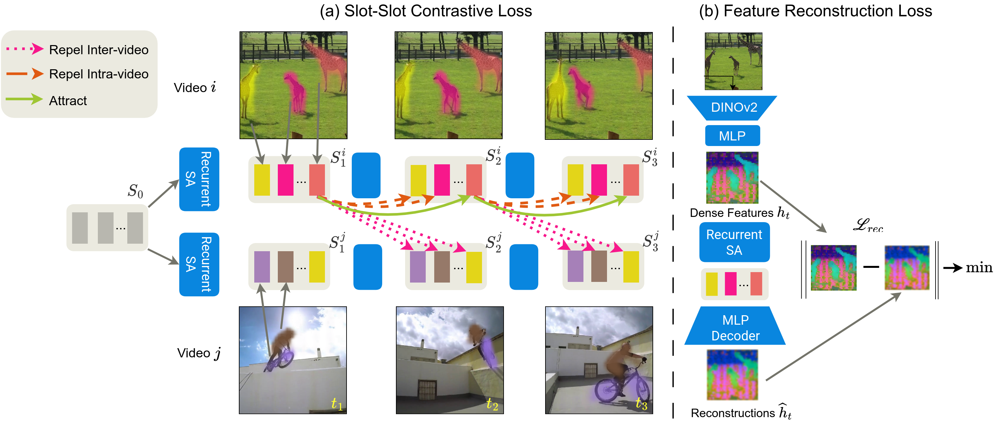
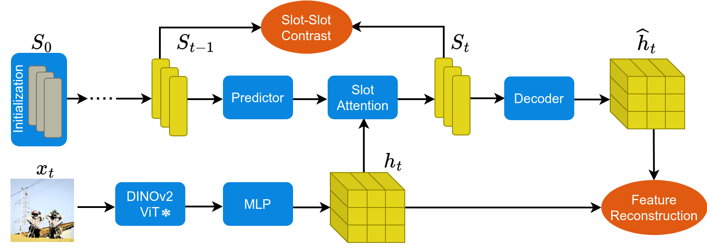

Unsupervised object-centric learning from videos is a promising approach to extract structured representations from large, unlabeled collections of videos. To support downstream tasks like autonomous control, these representations must be both compositional and temporally consistent. Existing approaches based on recurrent processing often lack long-term stability across frames because their training objective does not enforce temporal consistency. In this work, we introduce a novel object-level temporal contrastive loss for video object-centric models that explicitly promotes temporal consistency. Our method significantly improves the temporal consistency of the learned object-centric representations, yielding more reliable video decompositions that facilitate challenging downstream tasks such as unsupervised object dynamics prediction. Furthermore, the inductive bias added by our loss strongly improves object discovery, leading to state-of-the-art results on both synthetic and real-world datasets, outperforming even weakly-supervised methods that leverage motion masks as additional cues.
Overview of Slot-Slot Contrastive and Feature Reconstruction loss functions.
SLOT CONTRAST model architecture overview.
| Method | MOVi-C | MOVi-E | YouTube-VIS | |||
|---|---|---|---|---|---|---|
| FG-ARI ↑ | mBO ↑ | FG-ARI ↑ | mBO ↑ | FG-ARI ↑ | mBO ↑ | |
| SAVi | 22.2 | 13.6 | 42.8 | 16.0 | - | - |
| STEVE | 36.1 | 26.5 | 50.6 | 26.6 | 15 | 19.1 |
| VideoSAUR | 64.8 | 38.9 | 73.9 | 35.6 | 28.9 | 26.3 |
| VideoSAURv2 | - | - | 77.1 | 34.4 | 31.2 | 29.7 |
| SLOTCONTRAST | 69.3 | 32.7 | 82.9 | 29.2 | 38.0 | 33.7 |
Note: Metrics are computed over full videos (24 frames for MOVi, up to 76 frames for YouTube-VIS).
VideoSAURv2 uses DINOv2 features.
Comparison of predictions made by SlotFormer (SF) based on representations obtained from SLOT CONTRAST and Feature Reconstruction.
| Method | MOVi-C | MOVi-E | YouTube-VIS | |||
|---|---|---|---|---|---|---|
| FG-ARI ↑ | mBO ↑ | FG-ARI ↑ | mBO ↑ | FG-ARI ↑ | mBO ↑ | |
| Feat. Rec. + SF | 50.7 | 25.9 | 70.6 | 24.3 | 27.4 | 28.9 |
| SLOT CONTRAST + SF | 63.8 | 26.1 | 70.5 | 24.9 | 29.2 | 29.6 |
If you find this work useful, please cite our paper
@inproceedings{manasyan2025temporally,
title={Temporally Consistent Object-Centric Learning by Contrasting Slots},
author={Manasyan, Anna and Seitzer, Maximilian and Radovic, Filip and Martius, Georg and Zadaianchuk, Andrii},
booktitle={Proceedings of the IEEE/CVF Conference on Computer Vision and Pattern Recognition (CVPR)},
year={2025}
}